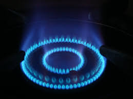
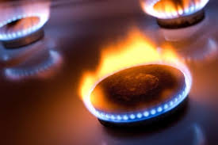
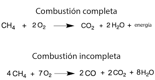
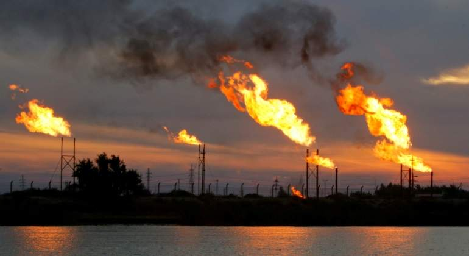
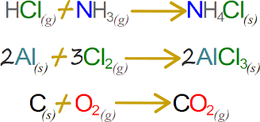
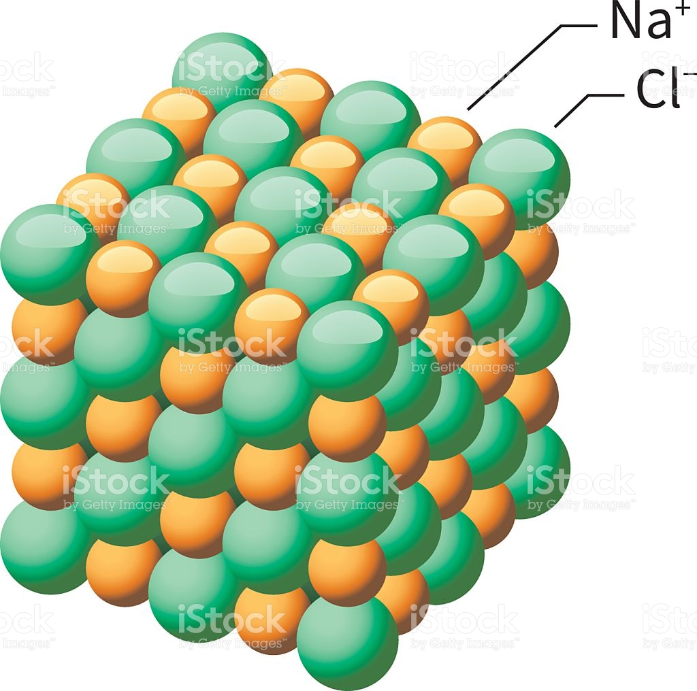
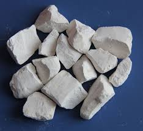

REACCIONES QUIMICAS

CONCEPTO
Las reacciones químicas ocurren cuando se forman o rompen los enlaces químicos entre átomos. Las sustancias que intervienen en una reacción química se denominan reactivos (se encuentran generalmente del lado izquierdo de una ecuación química), y las sustancias producidas al final de la reacción se conocen como productos (generalmente se encuentran al lado derecho de la ecuación química).

Imagen 1 Tipos de Reacciones Quimicas
Tipos de Reacciones Quimicas
Combustion
La reacción de combustión puede llevarse a cabo directamente con el oxigeno o bien con una mezcla de sustancias que contengan oxígeno, llamada comburente, siendo el aire atmosférico el comburente mas habitual

Imagen 2 La Combustion
La reacción del combustible con el oxígeno origina sustancias gaseosas entre las cuales las más comunes son CO2 y H2O. Se denominan en forma genérica productos, humos o gases de combustión. Es importante destacar que el combustible solo reacciona con el oxigeno y no con el nitrógeno, el otro componente del aire. Por lo tanto el nitrógeno del aire pasará íntegramente a los productos de combustión sin reaccionar.
Combustion Completa
Ocurre cuando las sustancias combustibles reaccionan hasta el máximo grado posible de oxidación. En este caso no habrá presencia de sustancias combustibles en los productos o humos de la reacción.
Imagen 3 Combustion Completa
Combustion Incompleta
Se produce cuando no se alcanza el grado máximo de oxidación y hay presencia de sustancias combustibles en los gases o humos de la reacción, es decir cuando se presenta sedimentos que no se llegan a usar o sobran de la reaccion, esto es comun cuando tenemos una flama de color amarillo como en las cerillas.
imagen 4 combustion incompleta
Combustion Teorica
Es la combustión que se lleva a cabo con la cantidad mínima de aire para que no existan sustancias combustibles en los gases de reacción. En este tipo de combustión no hay presencia de oxígeno en los humos, debido a que este se ha empleado íntegramente en la reacción.
A continuacion tenemos un ejemplo mediante dos ecuaciones que muestra mediante la igualacion lo antes explicado.

Imagen 5 Diferencia de reacciones
Donde se usa esta reaccion?
Las reacciones de combustión son muy útiles para la industria de procesos ya que permiten disponer de energía para otros usos y generalmente se realizan en equipos de proceso como hornos, calderas y todo tipo de cámaras de combustión.

Imagen 6 Quema de Petroleo
A contiuacion podras observar un video donde se muestra el ejemplo de las llamas y el por que de su color
Video 1 Explicacion color de las flamas
Las Reacciones de Combinación:
Las Reacciones de Combinación o Reacciones de Síntesis son aquellas en las que dos sustancias se unen para formar un único producto. En esta reacción los átomos de los reactivos se reagrupan para dar lugar el producto según la fórmula:
imagen 7 reaccion se sustitucion
Metal + no metal compuesto binario (óxido, sulfuro o haluro)
Para los metales de los grupos IA, IIA y también para el aluminio, zinc y plata, siempre podemos predecir el producto que han de formar. Para otros metales que tienen estado de oxidación variable, el producto final depende de las condiciones de reacción, pero generalmente se necesita más información para predecir el producto. Considere el siguiente
imagen 8 cloruro de sodio
No metal + oxígeno óxido de no metal
En general, hay una variedad de productos que pueden formarse en reacciones de este tipo. Por ejemplo cuando el carbono se combina con el oxígeno, si la cantidad de oxígeno presente es limitada, el producto es monóxido de carbono (CO); si hay un exceso de oxígeno, el producto es dióxido de carbono (CO2), como se puede observar en las siguientes ecuaciones:

imagen 9 dioxido de carbono
Oxido de metal + agua hidróxido de metal
Por ejemplo, el óxido de calcio (CaO) se combina con el agua para formar hidróxido de calcio . La fórmula del hidróxido formado está determinada por el conocimiento del número de oxidación del metal y la carga del ion hidroxilo (OH-). Si el metal presenta más de un estado de oxidación el estado de oxidación en el hidróxido es siempre igual al que tenía el óxido. Por ejemplo, el óxido de hierro (III) forma el hidróxido de hierro (III). Debido a la formación del hidróxido del metal o base, a partir del óxido de metal en agua, el óxido del metal es algunas veces llamado óxido básico. 
imagen 10 oxido de calcio
Oxido de metal + agua oxácido
Los óxidos de no metales reaccionan con agua para formar oxácidos . Por esta razón son frecuentemente llamados óxidos ácidos. Ejemplo, el dióxido de azufre reacciona con agua para formar ácido sulfuroso . El dióxido de azufre, SO2 puede ser oxidado en el aire para formar SO3. Cuando éste se combina con el agua, se produce ácido sulfúrico.